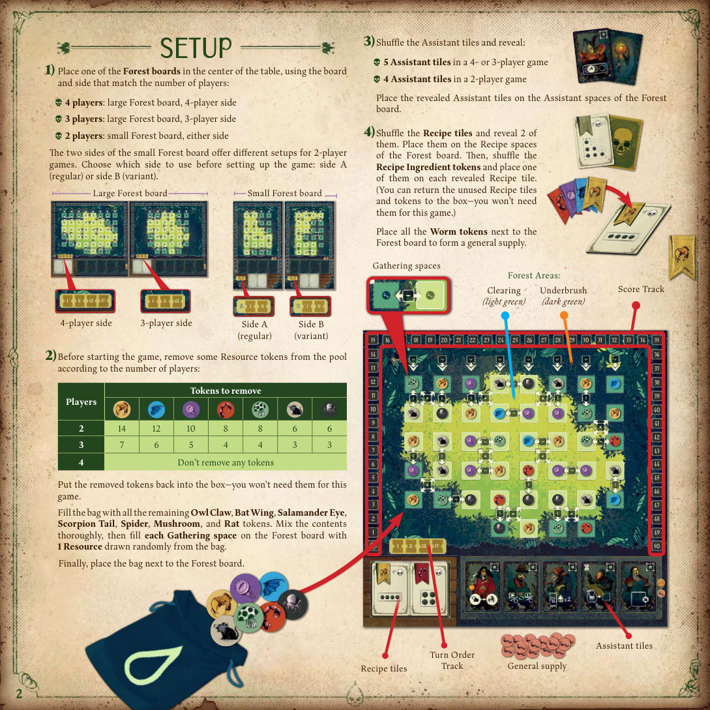
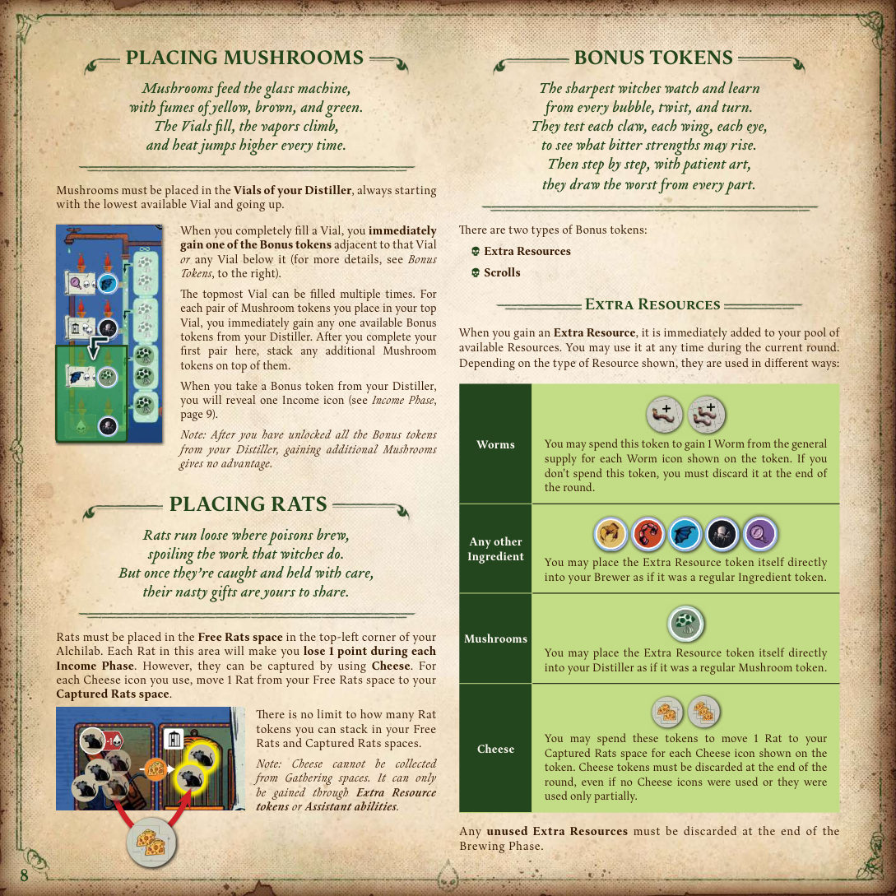
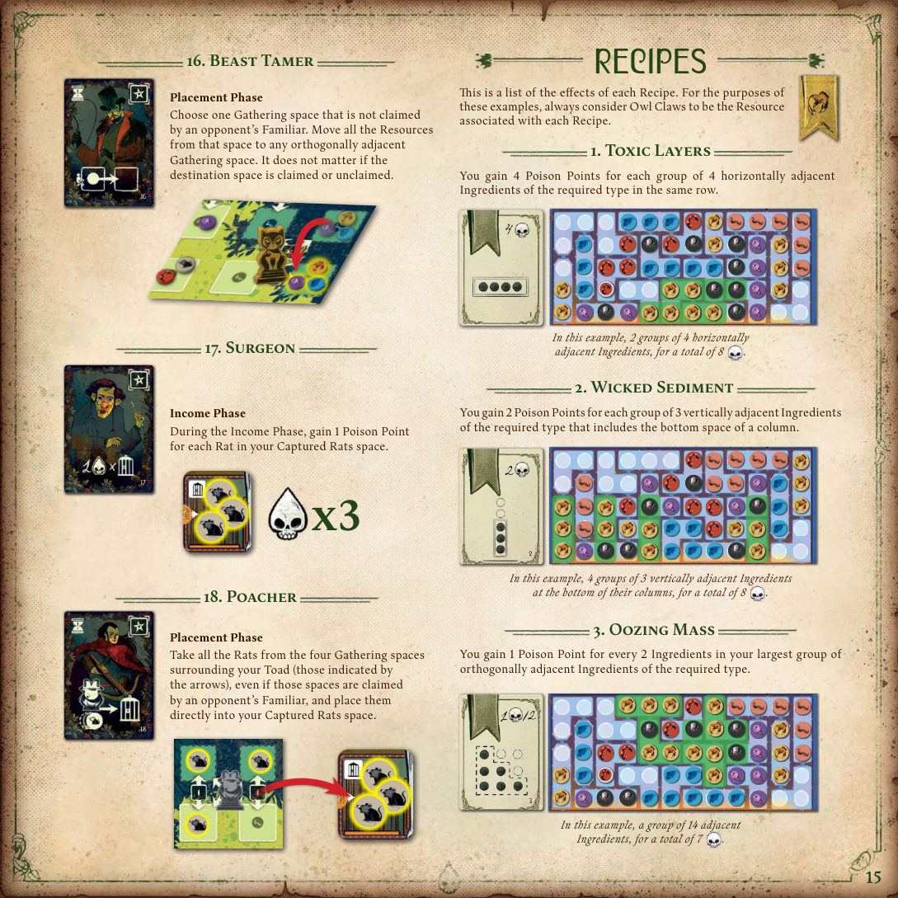
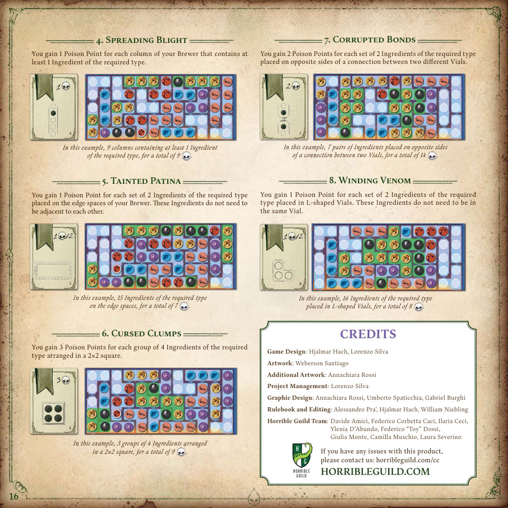
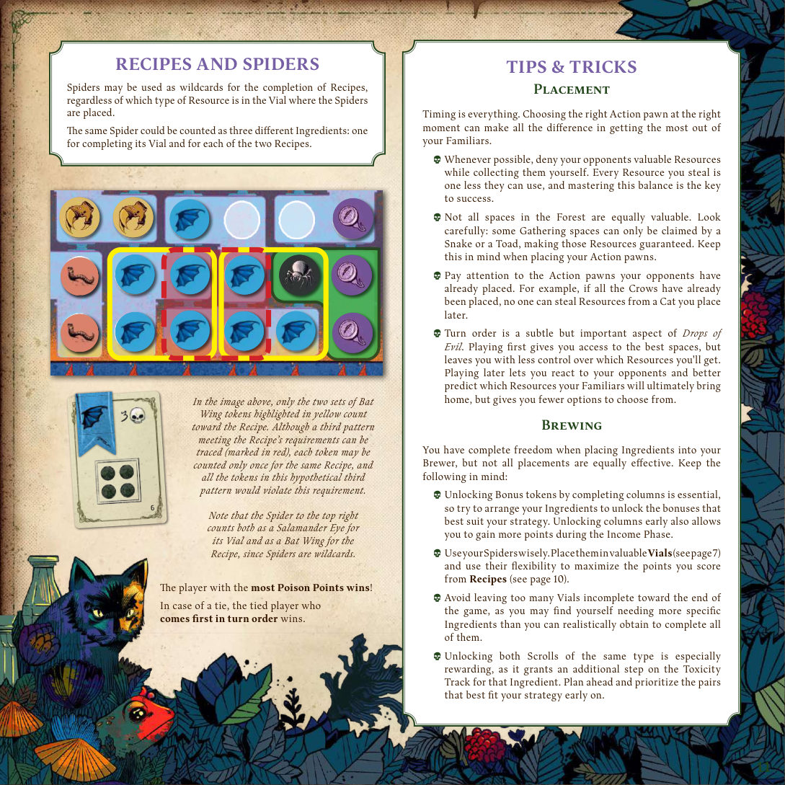

1游戏简介
在《Drops of Evil》中，玩家扮演女巫，比拼谁能熬出最强效的毒药。派出你的使魔深入森林采集材料，再把它们投入你的炼金实验室（Alchilab）——一台用于合成致命药剂的诡异装置。
把材料放对位置可以提升毒性、解锁珍贵的奖励；招募来路不明的助手，依照阴森的配方行事，让你的药剂更恶毒。你能熬出最致命的毒药吗？
良兽远避使魔来，盘绕歪树荆棘间。
根须苔下藏奇物，蝠翼利爪独眼观；
投入玻璃与烈焰，滴出至毒在人间。

2配件
- 2 块双面森林版图（1 大 1 小）
- 8 块配方面板
- 4 个配方材料标记
- 18 块助手面板
- 1 本计分册
- 1 个布袋
- 额外资源标记 56 个
- 卷轴 40 个
- 猫头鹰爪 30
- 火蜥蜴眼 22
- 蝠翼 26
- 蝎尾 18
- 蜘蛛 14
- 蘑菇 18
- 鼠 14
- 虫 58（公共供应）
- 1 块炼金实验室板
- 5 个行动棋子：1 乌鸦、1 猫、1 蟾蜍、1 蛇、1 钱袋
- 1 个计分标记
- 1 个回合顺序标记
- 6 个毒性标记
- 14 个额外资源标记
- 10 个卷轴标记
3游戏设置
- 把一块森林版图放在桌面中央，按人数选用对应的板面：
- 4 人：大森林版图 · 4 人面
- 3 人：大森林版图 · 3 人面
- 2 人：小森林版图 · 任一面（A 面为常规，B 面为变体，开局前选定）
- 开局前按人数从资源池中移除部分资源标记：
移除的标记放回盒中——本局不再使用。人数 猫头鹰爪 火蜥蜴眼 蝠翼 蝎尾 蜘蛛 蘑菇 鼠 2 人 14 12 10 8 8 6 6 3 人 7 6 5 4 4 3 3 4 人 不移除任何标记 - 洗混助手面板并翻开：4 人或 3 人局翻 5 块，2 人局翻 4 块，放在森林版图的助手位上。
- 洗混配方面板并翻开 2 块，放在森林版图的配方位上；再洗混配方材料标记，在每个翻开的配方面板上各放 1 个（未用到的配方面板与标记放回盒中）。把全部虫标记放在版图旁，构成公共供应。
- 每位玩家选一个颜色，拿走该色全部玩家配件（见第 2 节）。把 5 个行动棋子放在实验室板右上的行动棋子区；把 6 个毒性标记放在实验室顶边毒性轨道上对应图标的格子里——这些是各材料的起始毒分值。
- 把每位玩家的回合顺序标记随机放到森林版图回合顺序轨的格子里（从左到右依次排好），确定初始先后手；再把计分标记放到环绕森林版图的计分轨道起点格（带图标的格子）。
- 首位玩家按下列方式在自己的实验室上摆好奖励标记，其余玩家完全复制这一布局，使所有实验室起始配置一致；未用到的卷轴收回盒中：
- 洗混额外资源标记，随机各放 1 个在蒸馏器左侧的圆格、以及自己熬制器底部的圆格上。
- 洗混蒸馏器卷轴（背面有蘑菇图标），随机弃 1 个，其余随机放到蒸馏器的对应格。
- 洗混熬制器卷轴（背面有小瓶图标），随机弃 1 个，其余随机放到熬制器的对应格。

4流程概览
利爪兽掌翼与鳞，寻来令你胆寒之物。
游戏进行 3 轮，每轮分为 4 个阶段：
- 放置阶段：玩家轮流把行动棋子放到森林版图上，表示本轮想采集哪些资源，或雇佣一位助手。
- 采集阶段：收回使魔并取得资源。可采集格越少的使魔先结算，因此可能抢走较慢使魔的资源。
- 调配阶段：把采到的资源放进自己的炼金实验室。
- 收入阶段：按已揭示的收益图标得分，然后补充森林，准备下一轮。
第 3 轮结束时，毒分（☠）最多的玩家获胜。
5放置阶段
有的取少却回得快，有的探深却归得迟。
林中道理女巫知：收成越丰，路越慢。
玩家按回合顺序轨上的顺序轮流行动。轮到你时，你必须把 5 个行动棋子中的 1 个放到森林版图上的任意空格。棋子出场顺序由你自定。如此轮流，直到所有玩家放完全部 5 个行动棋子。
行动棋子的种类
行动棋子分两类：使魔（采集森林资源）与钱袋（用于激活助手）。每类棋子只能放在对应类型的格子上，且不能放在已被其他棋子占据的格子上。
乌鸦只能放在森林版图林间空地（clearing）的采集格上——即浅绿色、实线边框的格子；不能放在灌木丛（underbrush，虚线边框）里。乌鸦取走单一采集格内的全部资源，最先结算。
猫只能放在双箭头格上。它们采集箭头所指的 2 个采集格内的资源，第二个结算。
蟾蜍只能放在四箭头格上。它们采集箭头所指的 4 个采集格内的资源，第三个结算。
蛇只能放在下箭头格上。它们采集箭头所指整列采集格内的资源，但也是最后结算的使魔。
钱袋只能放在助手上，用于包下助手的服务。助手的效果在回合中的特定阶段使用（详见第 13 节）。

更新回合顺序
蛇若绕经根与棘，归来疲惫又迟缓。
所有玩家放完行动棋子后、进入采集阶段之前，必须更新回合顺序轨。新的先后顺序由每位玩家蛇在森林版图上的位置决定：蛇最靠左的玩家成为下一轮首位玩家，第二靠左的成为第二，以此类推，据此重排回合顺序标记。
6采集阶段
捷者带战利品归爪，慢者只在草堆下捡残渣。
玩家此刻收回森林版图上的使魔并取得资源。本阶段的步骤可由所有玩家同时执行，但使魔必须严格按由快到慢的顺序收回：
- 所有玩家收回乌鸦；然后
- 所有玩家收回猫；然后
- 所有玩家收回蟾蜍；然后
- 所有玩家收回蛇。
收回使魔时，一并取走该使魔能采集的所有采集格内的全部资源。
收回使魔后，把它放回实验室板右上角对应的格子里；把采集到的资源放在实验室板旁，构成你的可用资源池——这些资源将在调配阶段使用。

7调配阶段 · 放置材料
翅膀、利爪与独眼铺开，恶心的排列必须成形。
每一件若放得恰好，能让药汤黑如夜。
玩家把本阶段采集到的所有资源放入自己的炼金实验室。此阶段所有玩家同时进行。放置顺序自定，但（在可能的情况下）必须在阶段结束前全部放完。
资源的三类归属
放入熬制器（Brewer）的药瓶中。
放入蒸馏器（Distiller）的药瓶中。
放入实验室左上鼠区的「自由鼠」格。
虫（Worms）与奶酪（Cheese）不放入实验室，它们作为资源留在资源池中/立即结算使用（见第 9 节）。
材料放置规则
- 每个格子只能放 1 个材料标记。
- 每个药瓶（Vial）内只能有一种材料——蜘蛛除外。
- 你不能移动前几轮已放置的材料。
- 尽可能全部放完；只有在确实没有合法位置时，才在调配阶段结束时弃掉该材料。
游戏结束时，每个完全填满的药瓶会为你带来等于该材料当前毒性值的毒分（详见第 12 节）。
禁止纯蜘蛛瓶：不能整个药瓶只放蜘蛛——每个瓶中必须至少有 1 个非蜘蛛材料，才能确定该瓶值多少毒分。
填满整列
热气上腾烟散开，教聪慧女巫知晓：
残渣何用、毒素怎玩、毒药如何愈炼愈利。
熬制器中的格子排成列，一列可能横跨多个药瓶。每当你填满某一列的所有格子，立即获得该列下方的全部奖励标记——不论这些格子所属的药瓶是否填满。
获得奖励标记时，可能揭示 1 个或多个收益图标（见第 11 节）。想预先知道填满某列会揭示几个收益图标，就看该列底部的火焰数量：火焰数 = 将揭示的收益图标数。

8调配阶段 · 放置蘑菇
药瓶渐满蒸气升，热度一次高过一次。
蘑菇必须放进蒸馏器（Distiller）的药瓶，且总是从最低的可用药瓶开始向上填。
- 每当你填满一个药瓶，立即获得该瓶或它下方任意一个药瓶旁边相邻的 1 个奖励标记。
- 最顶端的药瓶可以反复填：每在该瓶放入一对蘑菇，立即从蒸馏器中任选 1 个尚可用的奖励标记获得。填满第一对之后，后续蘑菇就叠放在它们上面。
- 从蒸馏器取走奖励标记时，会揭示 1 个收益图标。

9奖励标记
试遍利爪、翅膀与独眼，看有何等苦力可升。
奖励标记分两种：额外资源与卷轴。
额外资源（Extra Resources）
获得额外资源时，它立即加入你的可用资源池，本轮内随时可用。按所示资源类型，用法不同：
| 类型 | 用法 |
|---|---|
| 虫 | 可花费该标记，按标记上的虫图标数量从公共供应取等量虫。若不花费，本轮结束时弃掉。 |
| 任意其他材料 | 可把该额外资源标记当作普通材料标记直接放进熬制器。 |
| 蘑菇 | 可把该额外资源标记当作普通蘑菇标记直接放进蒸馏器。 |
| 奶酪 | 可花费该标记，按标记上的奶酪图标数量，把等量鼠从自由鼠区移到捕获鼠区。不论是否使用、是否只用了一部分，奶酪标记都在本轮结束时弃掉。 |
卷轴（Scrolls）
卷轴会提升特定资源的毒分值。获得卷轴时，按卷轴上完整的图标数量，把对应毒性标记在毒性轨道上前进等量格。获得的卷轴保留在实验室旁。
注意：由于开局会随机弃掉卷轴，某些局中某种材料的卷轴可能只有一张、甚至两张都不在场。
资源的翻面规则
所有资源标记的一面有个小三角形。放置时让有三角形的一面朝上；调配阶段结束时把它们翻到无三角形的一面。这样本轮放置的资源仍可反悔调整，又不会误动前几轮已放好的资源。
当你解锁某个奖励标记时，把促成解锁的资源翻到无三角形的一面——从那一刻起，这些资源不能再移动。
10调配阶段 · 放置老鼠
但一旦擒住好生看管，它们的脏礼便可分你一份。
鼠必须放进实验室左上角的「自由鼠」格。自由鼠区的每只鼠在每次收入阶段让你失去 1 分。但它们可以用奶酪捕获：每使用 1 个奶酪图标，就把 1 只鼠从自由鼠区移到捕获鼠区。
自由鼠格与捕获鼠格上叠放的鼠标记数量不限。
11收入阶段与回合结束
收入阶段
热度越早起，酿出的药越随时间而烈。
- 实验室上每揭示 1 个收益图标，你获得 1 毒分。
- 自由鼠区每只鼠，你失去 1 毒分。
- 按结果移动计分标记（不能低于 0 分）。
回合结束
湿薄空地之上，难捉的小东西悄悄爬回。
此阶段进行「清理」并为下一轮做准备：
- 所有玩家从森林版图收回自己的钱袋。
- 从袋中为森林版图上的每个采集格补充 1 个随机资源——包括上轮未被取走、仍有资源残留的格子。
- 开始新一轮。

12终局计分
从恶毒的酿物中，经管道与滤网，
滴下不该由良善之辈奉上的液滴。
当这些「恶之滴」落下，最烈的毒赢走一切。
第 3 轮结束时游戏结束，开始计算最终得分：先把你在计分轨道上的毒分记入计分册，再按下列三部分结算——已完成的药瓶、捕获的鼠、遵循的配方。
① 已完成的药瓶
若一个药瓶内的每个格子都放了材料标记，该瓶即完成。每个完成的药瓶，按瓶内材料类型在毒性轨道上的当前毒性值得分；未完成的药瓶不得分。
② 捕获的鼠
捕获鼠区里的每只鼠，按其当前的毒性值（见毒性轨道）得分。
③ 配方
每局有 2 张配方，各配 1 个配方材料标记，指示该配方所需的材料类型；配方面板上还画有必须在熬制器中形成的具体材料图案，以及一个毒分值。你的熬制器中每出现一次符合该图案的匹配材料，就获得一次该毒分值。

毒分最多的玩家获胜。平局时，回合顺序在前的玩家获胜。
13助手一览
他们带来诡计、工具与手艺，收了钱便乐意借你一用。
助手提供多种能力，可在回合中的特定阶段激活（放置、调配或收入阶段）。
- 放置阶段激活的助手：可在雇佣后立即激活，也可在你之后的某个放置回合中、放置行动棋子之前或之后激活。这类效果要注意回合顺序（其面板左上角有回合顺序图标）。
- 激活已雇佣的助手时，把你的钱袋棋子横放，表示该助手的能力已使用。
- 在调配阶段结束前，你也可以不激活助手能力，改为获得 1 虫或 1 奶酪（见面板上的图标，森林版图助手位旁也有同样提示）。同样横放钱袋作为提醒。
从你的实验室取 1 只鼠，当作蜘蛛放入熬制器的某个药瓶。鼠可取自自由鼠区或捕获鼠区。
交换实验室上的两个奖励标记。两个标记可以类型不同，也可以在熬制器与蒸馏器之间交换。若如此做，额外从公共供应获得 1 虫。
本回合的收入阶段，你从蒸馏器收益图标获得的毒分翻倍。
放置乌鸦时，可以把乌鸦当作猫放到双箭头格；若如此，采集阶段也必须按猫的顺序收回。
从公共供应获得 2 虫。
可以把乌鸦放在灌木丛（虚线边框）的采集格上；若如此做，额外从公共供应获得 1 虫。
选择熬制器中 1 个未完成、且缺不超过 2 个材料的列，立即获得该列下方的全部奖励标记，如同该列已完成。
放置猫时，可以把猫当作蟾蜍放到四箭头格；若如此，采集阶段也必须按蟾蜍的顺序收回。
特殊：每轮开始时，从袋中抽 1 个资源放在此面板上（即使上面已有资源）。若抽到鼠，放回袋中重抽。极端情况下袋中只剩鼠，则阴森商人保持空置、本回合无收益。
激活此面板时，拿走其上全部资源加入可用资源池。
从可用资源池取 1 只蜘蛛，横跨熬制器同一药瓶的两个格子放置；两格各自视为被蜘蛛占据。
从可用资源池或鼠区取 1 鼠或 1 虫，当作蘑菇放入蒸馏器。
把自由鼠区的所有鼠移到捕获鼠区。
选择森林版图（林间空地或灌木丛均可）上 1 个在采集阶段结束时仍含有资源的采集格，取走该格全部资源加入可用资源池。
从森林版图收回自己的1 个使魔（不能收回钱袋）。注意：这意味着本回合你有六次放置回合（而非通常的五次）。
在你放置蛇的那一列中，选择 1 个未被对手使魔认领的采集格，取走该格全部资源加入可用资源池。
选择 1 个未被对手使魔认领的采集格，把该格全部资源移到任意一个正交相邻的采集格；目标格是否被认领不影响。
本回合收入阶段，你捕获鼠区里的每只鼠额外为你带来 1 毒分。
取走你蟾蜍周围（箭头所指）4 个采集格上的所有鼠，直接放入捕获鼠区——即使这些格子被对手的使魔认领。

14配方一览
以下为 8 种配方的计分效果。举例中一律假定所需材料为「猫头鹰爪」。
同一行中水平相邻的 4 个所需材料为一组，每组 4 毒分。
每组垂直相邻的 3 个所需材料，且包含所在列的底部格子，得 2 毒分。
你最大的一组正交相连的所需材料中，每 2 个得 1 毒分。
熬制器中每含至少 1 个所需材料的列，得 1 毒分。
位于熬制器边缘格上的所需材料，每 2 个得 1 毒分（这些材料不必彼此相邻）。
排成 2×2 方形的 4 个所需材料为一组，每组 3 毒分。
分别位于两个不同药瓶连接处两侧的所需材料，每 2 个（一对）得 2 毒分。
位于 L 形药瓶中的所需材料，每 2 个得 1 毒分（不必在同一个药瓶内）。


15提示与技巧
放置
时机就是一切。在正确时机选对行动棋子，能让你从使魔身上榨出最大收益。
- 尽可能自己取走对手需要的资源；你抢到的每一个资源，都是对手少用的一分，掌握这个平衡是取胜关键。
- 森林里的格子价值并不相等。仔细观察：有些采集格只能被蛇或蟾蜍取到，那些资源是有保障的——放置时要记得这点。
- 留意对手已放下的棋子。例如：乌鸦都已放完后，你之后放的猫就不会被抢资源。
- 回合顺序是微妙却重要的一环：先手能占到最好的格子，但对最终能拿到哪些资源的控制更弱；后手能对对手做出反应、更可预测使魔归来时的收获，但可选项更少。
调配
放材料时你完全自由，但不同放法效果差距很大：
- 填满整列解锁奖励标记至关重要——尽量排列材料，解锁最契合你策略的奖励。早早解锁列还能让你在收入阶段拿到更多毒分。
- 善用蜘蛛：把它们放进价值高的药瓶，并用其灵活性最大化配方得分。
- 游戏后段避免留下太多未完成的药瓶——你可能会发现自己需要的具体材料根本凑不齐。
- 同种卷轴收齐两张回报极高，能让该材料的毒性轨道多前进一格。提前规划，开局就优先锁定契合策略的那一对。

16制作名单
游戏设计：Hjalmar Hach、Lorenzo Silva
美术：Weberson Santiago
附加美术：Annachiara Rossi
项目管理：Lorenzo Silva
平面设计：Annachiara Rossi、Umberto Spaticchia、Gabriel Burghi
规则书与编辑：Alessandro Pra’、Hjalmar Hach、William Niebling
Horrible Guild 团队：Davide Amici、Federico Corbetta Caci、Ilaria Ceci、Ylenia D’Abundo、Federico “Toy” Dossi、Giulia Monte、Camilla Muschio、Laura Severino
产品问题请联系：horribleguild.com/cc · HORRIBLEGUILD.COM